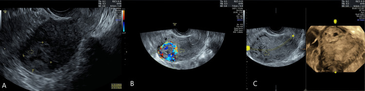
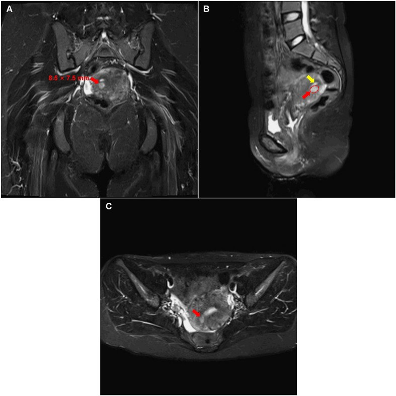
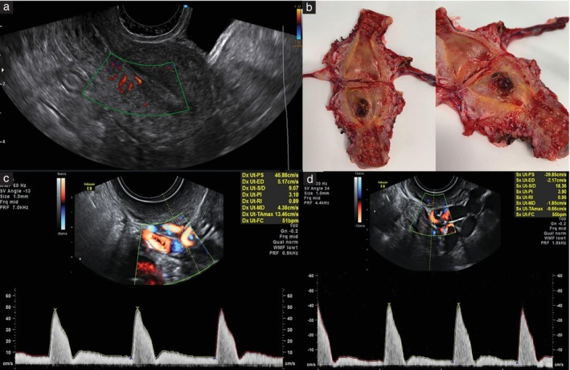
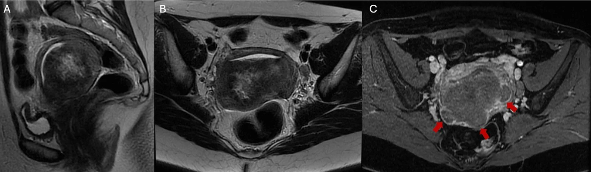

559 — U nguyên bào nuôi tại vị trí nhau (PSTT) & u nguyên bào nuôi dạng biểu mô (ETT): khối xâm lấn cơ tử cung, hCG thấp & phân giai đoạn FIGO 2026
Tags: pattern:khoi-tu-cung pattern:xam-lan-co-tu-cung vung:tu-cung vung:co-tu-cung score:FIGO-2026 protocol:MRI-chau protocol:CT-nguc
Mức chắc chắn (certainty): tổng hợp y văn (literature synthesis) — tổng hợp từ hướng dẫn phân giai đoạn FIGO 2026 (Ngan 2026), đoàn hệ tiến cứu siêu âm Doppler (Cioffi 2025), đoàn hệ 236 u nguyên bào nuôi trung gian (Peking Union 2026), 2 bài review và 4 ca nguyên văn có ảnh mở; mọi số liệu đối chiếu trực tiếp với PMCID.
1. Tổng quan bệnh học – cơ chế hình ảnh
- Vị trí trong phổ bệnh nguyên bào nuôi: bệnh nguyên bào nuôi thai kỳ (gestational trophoblastic disease – GTD) gồm thai trứng, thai trứng xâm lấn, ung thư nguyên bào nuôi (choriocarcinoma) và nhóm u nguyên bào nuôi trung gian (intermediate trophoblastic tumors – ITT) = PSTT + ETT. PSTT/ETT chỉ chiếm 1–3% toàn bộ bệnh nguyên bào nuôi thai kỳ ác tính (GTN); riêng PSTT 0,2–3% GTN, tần suất 1–5/100.000 thai kỳ; ETT 1–2% bệnh nguyên bào nuôi.
- Nguồn gốc tế bào quyết định miễn dịch học:
- PSTT xuất phát từ nguyên bào nuôi trung gian kiểu bám (implantation-site intermediate trophoblast) — tế bào lớn, đa diện, bào tương ưa eosin; hPL dương mạnh/diffuse, p63 âm hoặc dương ổ, hCG yếu, Ki-67 thường 10–40%.
- ETT xuất phát từ nguyên bào nuôi trung gian kiểu màng nuôi (chorionic-type intermediate trophoblast) — tế bào đơn dạng, bào tương sáng, xếp thành nang/dải, hoại tử địa lý (geographic necrosis) và chất nền hyaline giống keratin; p63 dương lan tỏa, hPL/hCG chỉ ổ hoặc âm, Ki-67 10–25%.
- Hệ quả thực hành: p63 dương + hPL âm → ETT; hPL dương + p63 âm → PSTT; Ki-67 chồng lấp nhiều nên không dùng một mình để phân biệt hai thể.
- TẠI SAO hCG thấp mà khối vẫn lớn: tế bào trung gian tiết hCG rất ít so với hợp bào nuôi. Trong đoàn hệ 236 ITT, hCG trước điều trị trung vị chỉ 114 IU/L; PSTT có hCG thấp hơn hẳn các GTN khác và không có nang hoàng thể hóa (theca-lutein cyst). Vì vậy hCG âm/thấp KHÔNG loại trừ PSTT/ETT — đây là cạm bẫy chẩn đoán hàng đầu.
- TẠI SAO hình ảnh trông như vậy (vật lý + mô bệnh):
- Khối xâm lấn cơ tử cung thay thế cơ lành: trên T2W, mô u giàu tế bào + chất nền hyaline tín hiệu trung gian đến hơi cao, bờ không rõ; vùng hoại tử giàu nước T2 rất cao và không ngấm thuốc; xuất huyết trong u (methemoglobin) T1 cao.
- Sau gadolinium, phần u sống ngấm mạnh (giàu mạch), còn vùng hoại tử/hyaline ngấm kém → khối ngấm không đồng nhất.
- DWI: mật độ tế bào cao làm hạn chế khuếch tán (ADC thấp) — giúp thấy bờ xâm lấn nhưng không đặc hiệu so với sarcoma/carcinoma.
- TẠI SAO Doppler tử cung khác choriocarcinoma: choriocarcinoma tạo shunt động–tĩnh mạch lớn, sức cản rất thấp; PSTT tăng sinh chậm hơn, nhiều mô xơ/hoại tử nên chỉ số đập động mạch tử cung (uterine artery pulsatility index – UtA-PI) cao hơn. Đoàn hệ 73 GTN: UtA-PI trung vị 2,2 (IQR 1,5–2,7) ở PSTT vs 1,5 (1,0–2,4) ở GTN khác, P = 0,014; ngưỡng > 1,7: Se 89%, Sp 61%, AUC 0,768; mạch nội mạc (endometrial vascularity) gặp 0% ở PSTT vs 50% ở GTN khác (P = 0,013).
- Dịch tễ – tiên lượng định lượng:
- Khoảng cách từ thai kỳ trước (interval from antecedent pregnancy – IFAP) trung vị 15 tháng; 63% bệnh khu trú trong tử cung (stage I) lúc chẩn đoán.
- IFAP ≥ 48 tháng và stage IV là 2 yếu tố tiên lượng xấu độc lập trong FIGO 2026.
- Tái phát 8,8–13,3% ở bệnh giai đoạn sớm; sống dài hạn 42–65% ở bệnh lan rộng.
- ETT hay lan phổi hơn (29% vs 3% ở PSTT) và hay ở đoạn dưới tử cung/cổ tử cung hơn (24% vs 6%).
2. Mẫu hình + chẩn đoán phân biệt theo vị trí (gamut)
- Mẫu hình 1 — khối đặc trong cơ tử cung, bờ không rõ, ngấm thuốc mạnh: nghĩ PSTT trước tiên ở phụ nữ hCG thấp + chảy máu âm đạo kéo dài sau một thai kỳ (đủ tháng, sẩy, chửa ngoài tử cung đều được). Gamut: PSTT, choriocarcinoma, thai trứng xâm lấn, sản phẩm thai lưu (retained products of conception), adenomyoma, sarcoma cơ tử cung.
- Mẫu hình 2 — nốt/khối ở đoạn dưới tử cung hoặc cổ tử cung, có thành phần nang–hoại tử: nghĩ ETT. Ở đoạn dưới, ETT hay xuyên qua cơ ra dưới thanh mạc/phúc mạc sau phúc mạc tạo khối nang chứa máu cũ, rất dễ nhầm với chửa ngoài tử cung, endometrioma hoặc áp-xe. Gamut: ETT, ung thư cổ tử cung, chửa ở sẹo mổ lấy thai (CSEP), dị dạng động–tĩnh mạch tử cung (AVM), polyp/u xơ sa có cuống.
- Mẫu hình 3 — ổ nốt nhỏ trong cơ + hCG dao động nhẹ: gamut gồm nốt vị trí nhau (placental site nodule – PSN), phản ứng vị trí nhau tăng sinh (exaggerated placental site reaction), PSN không điển hình (atypical placental site nodule – APSN) và PSTT sớm. 10–15% APSN có thể đồng tồn tại hoặc tiến triển thành PSTT/ETT — cần theo dõi, không mặc định lành.
- Mẫu hình 4 — di căn ngoài tử cung: phổi (nốt tròn nhiều kích thước, có thể xuất huyết), âm đạo, buồng trứng, gan, não, hạch. Ở ETT, phổi có thể là biểu hiện đầu tiên dù tử cung chỉ có ổ nhỏ.
- Gợi nhớ lâm sàng: LOW hCG + LATE interval + LOCAL invasion = PSTT/ETT cho đến khi chứng minh ngược lại.
3. Bảng so sánh phân biệt (ma trận đối chiếu)
| Thực thể (entity) | Hình ảnh điển hình (US/CT/MRI) | Chốt vào (rule-in) | Chốt loại (rule-out) | Gợi ý xác nhận |
|---|---|---|---|---|
| PSTT | Khối đặc trong cơ, bờ không rõ, T2 trung gian–hơi cao, ngấm mạnh không đồng nhất, có thể xuất huyết; Doppler: UtA-PI cao, ít mạch nội mạc | hCG thấp + IFAP dài + khối xâm lấn cơ + hPL dương/p63 âm | hCG rất cao + nang hoàng thể hóa + shunt mạch rõ → nghĩ choriocarcinoma/thai trứng | MRI chậu có cản quang + sinh thiết/mô bệnh sau cắt tử cung; hPL, p63, Ki-67 |
| ETT | Nốt ở đoạn dưới/cổ tử cung, T2 hỗn hợp, hoại tử địa lý không ngấm, có thể nang chứa máu cũ T1/T2 cao, xuyên cơ ra dưới thanh mạc | Khối đoạn dưới/cổ + nang–hoại tử + p63 dương lan tỏa/hPL âm | Khối lòng tử cung đơn thuần + hCG cao → nghĩ GTN khác | MRI + nội soi buồng/ổ bụng; p63, hPL, Ki-67 |
| Choriocarcinoma | Khối giàu mạch, hoại tử–xuất huyết lớn, T2 rất không đồng nhất, ngấm mạnh; di căn phổi/gan/não thường xuất huyết | hCG rất cao + di căn xuất huyết + mạch máu tăng sinh | hCG thấp + u xơ hóa đơn độc → ít nghĩ | hCG, CT ngực, MRI não; mô bệnh nếu cắt tử cung |
| Thai trứng xâm lấn (invasive mole) | Khối trong cơ lan từ nội mạc, nhiều ổ nang nhỏ, tăng sinh mạch, có thể thủng cơ | Tiền sử thai trứng + hCG tăng/plateau sau hút + khối xâm lấn | Không có tiền sử thai trứng + hCG thấp → ít nghĩ | hCG động học, siêu âm Doppler, MRI |
| PSN/APSN | Nốt nhỏ, thường < 1 cm, hyaline hóa, T2 tối, ngấm kém, không xâm lấn rộng | Nốt nhỏ + hCG âm/thấp + Ki-67 < 5% | Khối lớn xâm lấn + Ki-67 cao → nghĩ PSTT/ETT | Mô bệnh; theo dõi hCG nếu APSN |
| Sản phẩm thai lưu/AVM | Khối trong buồng/cơ, mạch máu hỗn loạn, AVM có phổ tốc độ cao–sức cản thấp | Tiền sử thủ thuật + hCG giảm dần + hình ảnh mạch máu | hCG không giảm, khối đặc xâm lấn → nghĩ u | hCG lặp lại, siêu âm Doppler, MRI |

ETT vùng sừng tử cung: khối giả "chửa góc" với mạch máu tăng sinh (A–C). Đây là lý do ETT hay bị chẩn đoán nhầm là chửa ngoài tử cung. Nguồn: Alharbi 2025, CC BY 4.0.4. Protocol chụp + hệ phân giai đoạn/điểm chuẩn hóa
- Bước 1 — xét nghiệm: β-hCG huyết thanh (định lượng) + công thức máu, chức năng gan/thận trước hóa trị. hCG thấp không loại trừ; với khối tử cung không rõ bản chất ở phụ nữ tuổi sinh sản, luôn đo hCG.
- Bước 2 — siêu âm đầu dòng (transvaginal ultrasound + Doppler): mô tả vị trí, kích thước, độ đặc, độ ngấm, điểm mạch (color score), UtA-PI hai bên và mạch nội mạc. UtA-PI > 1,7 gợi ý PSTT hơn GTN khác nhưng không đủ để chẩn đoán.
- Bước 3 — MRI chậu có cản quang là BẮT BUỘC để phân giai đoạn PSTT/ETT (FIGO 2026): T2W sagittal + axial + coronal, T1W, DWI/ADC, T1 fat-sat sau gadolinium. Siêu âm và CT không đủ đánh giá xâm lấn cơ/tham số (parametrium).
- Bước 4 — tìm di căn: CT ngực (đếm nốt phổi, phân biệt di căn với nốt lành); nếu có nốt phổi ≥ 1 cm → MRI não + CT/MRI bụng. PET-CT không thường quy, chỉ cân nhắc trong bệnh nguy cơ cao.
- Bước 5 — mô bệnh: sinh thiết có thể chảy máu nhiều và không đại diện (hoại tử); nhiều ca chỉ chẩn đoán sau cắt tử cung. Hóa mô miễn dịch: hPL, p63, hCG, Ki-67, CD146.
- Phân giai đoạn FIGO 2026 cho PSTT/ETT (bảng riêng, KHÔNG dùng bảng điểm WHO/FIGO của GTN thông thường):
| Giai đoạn | Mô tả | Yếu tố tiên lượng |
|---|---|---|
| I | Giới hạn trong thân tử cung và cổ tử cung | GP: IFAP < 48 tháng; PP: IFAP ≥ 48 tháng |
| II | Lan tới phần phụ, âm đạo hoặc dây chằng rộng, còn trong cơ quan sinh dục | GP/PP theo IFAP như trên |
| III | Lan phổi ± đường sinh dục; hạch dưới cơ hoành | GP/PP theo IFAP như trên |
| IV | Mọi vị trí di căn khác, gồm hạch trên cơ hoành | Luôn là PP |
- Quy ước hạch: hạch đường kính trục ngắn ≥ 10 mm trên hình ảnh được tính là di căn; ghi thêm hậu tố r (imaging) hoặc p (pathology), ví dụ III LN r.
flowchart TD
A[Khối cơ tử cung + hCG thấp] --> B{MRI chậu có cản quang}
B --> C{Xâm lấn tới đâu?}
C -->|Chỉ thân tử cung/cổ| D[Stage I]
C -->|Phần phụ/âm đạo/dây chằng rộng| E[Stage II]
C -->|Phổi hoặc hạch dưới cơ hoành| F[Stage III]
C -->|Di căn khác hoặc hạch trên cơ hoành| G[Stage IV - luôn PP]
D --> H{IFAP ≥ 48 tháng?}
E --> H
F --> H
H -->|Không| I[GP - tiên lượng tốt]
H -->|Có| J[PP - tiên lượng xấu]
- Điều trị (khung):
- PSTT giai đoạn I: cắt tử cung toàn phần ± cắt phần phụ là chuẩn. Bảo tồn tử cung (cắt ổ u qua nội soi/ngả bụng + hóa trị bổ trợ) chỉ cho ca chọn lọc, mong con, u khu trú, được đa chuyên khoa đồng thuận — đã có ca sinh sống sau mổ bảo tồn + EMA/CO.
- Hóa trị bổ trợ khi có yếu tố nguy cơ: IFAP dài, hCG nền cao, hCG không về bình thường sau mổ, hoặc giai đoạn II–IV. Phác đồ chứa platinum (EMA/EP, FAEV); củng cố 3–4 đợt sau khi hCG bình thường. Nếu hCG vẫn bất thường sau hóa trị → cân nhắc cắt tử cung.
- ETT: phẫu thuật + hóa trị platinum; đáp ứng hóa trị kém hơn choriocarcinoma. Ức chế điểm kiểm soát miễn dịch (pembrolizumab) có ca đáp ứng hoàn toàn ở bệnh tái phát/PD-L1 dương — còn là dữ liệu ca, không phải chuẩn.
- Theo dõi: hCG 2 tuần/lần đến khi bình thường, sau đó hàng tháng; năm đầu 6–12 tuần/lần sau khi đạt lui bệnh; chụp lại theo triệu chứng. Tổn thương phổi tồn dư sau hóa trị gặp 19–30% dù hCG bình thường và không làm tăng tái phát — không vội mổ.
5. Biến thể bình thường và cạm bẫy
- hCG âm hoặc rất thấp: bệnh nhân có thể test nước tiểu âm vì hCG dưới ngưỡng; đừng loại trừ PSTT/ETT chỉ vì hCG thấp.
- Chẩn đoán nhầm hay gặp: PSTT bị chẩn đoán là chửa ngoài tử cung, thai lưu, u xơ thoái hóa; ETT đoạn dưới bị chẩn đoán là chửa ở sẹo mổ, áp-xe, endometrioma vì khối nang chứa máu cũ T1 cao.
- Nội soi buồng/ sinh thiết: có thể không lấy được mô đại diện (hoại tử địa lý) và gây chảy máu/perforation; nhiều ca chẩn đoán xác định chỉ sau cắt tử cung. Cần chuẩn bị cầm máu và đặt vấn đề mổ triệt căn trước thủ thuật.
- PSN vs PSTT: PSN nhỏ, hyaline, Ki-67 < 5%, hCG âm; PSTT xâm lấn, Ki-67 cao. APSN có thể tiến triển thành PSTT/ETT (10–15%) → theo dõi hCG và hình ảnh, không sinh thiết lặp vô ích.
- Áp sai bảng điểm: không dùng điểm FIGO/WHO 0–6/7–12/≥ 13 của GTN cho PSTT/ETT; hai nhóm này có bảng giai đoạn riêng và hóa trị kém đáp ứng.
- Di căn phổi đơn độc: có thể là ETT không rõ ổ tử cung; đừng mặc định là ung thư phổi nguyên phát khi bệnh nhân tuổi sinh sản và hCG thấp.
- Cạm bẫy mặt cắt: khối ở eo tử cung/cổ tử cung dễ bị đọc là "u xơ cổ" trên siêu âm; MRI T2 + DWI + ngấm thuốc giúp phân biệt bờ xâm lấn và thành phần hoại tử.
6. Tự lượng giá — Blind Quiz ngay trên trang tĩnh
Ca 1 — Nữ 32 tuổi, chảy máu âm đạo sau vô kinh, hCG dao động thấp, từng bị chẩn đoán chửa ngoài tử cung.

- Gợi ý: khối nhỏ trong cơ, không có túi thai; hCG không tăng theo quy luật thai.
- Câu hỏi: Mô tả vị trí và tín hiệu khối? Ba chẩn đoán phân biệt? Dấu hiệu nào trên MRI giúp nghĩ PSTT hơn choriocarcinoma?
Bấm để hiện đáp án (findings + chẩn đoán)
- Dấu hiệu: ổ 7,5 × 8,5 mm ở cơ sau bên phải, T1 đồng tín hiệu, T2 hơi cao, ngấm thuốc mạnh tương đương nội mạc, bờ rõ, không xâm lấn thanh mạc; không thấy túi thai.
- Chẩn đoán: PSTT giai đoạn I — tế bào trung gian xâm lấn cơ, hCG thấp, khối nhỏ nhưng ngấm mạnh.
- Phân biệt: choriocarcinoma (hCG rất cao, hoại tử–xuất huyết, shunt mạch), thai trứng xâm lấn (tiền sử thai trứng), sarcoma cơ (T2 hỗn hợp, DWI rất thấp, không có hCG).
- Nguồn: Yang J et al., Front Oncol 2026, PMC13469268, CC BY 4.0.
Ca 2 — Nữ 42 tuổi, ra máu âm đạo kéo dài sau sinh đủ tháng 24 tháng, hCG 53 IU/L.

- Gợi ý: khối trong cơ, ít mạch nội mạc; chú ý phổ Doppler động mạch tử cung.
- Câu hỏi: Dấu hiệu nào giúp phân biệt PSTT với GTN khác trên siêu âm? Ngưỡng UtA-PI và độ chính xác?
Bấm để hiện đáp án (findings + chẩn đoán)
- Dấu hiệu: nốt trong cơ tử cung thành sau, mạch trong u, không có mạch nội mạc, không nang hoàng thể hóa; UtA-PI cao (trung vị 2,2) so với 1,5 ở GTN khác.
- Chẩn đoán: PSTT — tăng sinh chậm, ít shunt động–tĩnh mạch nên sức cản cao; hCG thấp tương xứng.
- Ngưỡng: UtA-PI > 1,7: Se 89%, Sp 61%, AUC 0,768; phối hợp với mất mạch nội mạc nâng AUC lên 0,819.
- Nguồn: Cioffi R et al., Ultrasound Obstet Gynecol 2025, PMC12209685, CC BY-NC-ND 4.0 (giữ nguyên ảnh, không crop/ghép).
Ca 3 — Nữ 34 tuổi, rong kinh, hCG 176 IU/L, khối thân tử cung xâm lấn cơ ngoài và hạch cạnh động mạch chủ.

- Gợi ý: khối lớn, tín hiệu hỗn hợp, có vùng không ngấm thuốc.
- Câu hỏi: Vì sao nghĩ ETT hơn PSTT? Vùng không ngấm thuốc là gì? Hạch nằm ở đâu và ảnh hưởng giai đoạn thế nào?
Bấm để hiện đáp án (findings + chẩn đoán)
- Dấu hiệu: khối 60 × 49 × 52 mm giữa thân tử cung sau, T2 không đồng nhất, giảm tín hiệu so với cơ sau gadolinium, xâm lấn cơ ngoài 3 điểm nhưng chưa phá thanh mạc; hạch cạnh động mạch chủ và chậu ngoài trái; có máu trong u và ứ máu buồng tử cung.
- Chẩn đoán: ETT — hoại tử địa lý (vùng không ngấm), p63 dương, hPL âm; Ki-67 10–25%.
- Giai đoạn: hạch dưới cơ hoành → stage III LN r; nếu hạch trên cơ hoành → stage IV.
- Nguồn: Carvalho D et al., Cureus 2026, PMC13616432, CC BY 4.0.
Bài liên quan chéo
- 551 – Bệnh nguyên bào nuôi thai kỳ: thai trứng & choriocarcinoma
- 550 – Thai sớm: sảy thai, thai ngoài tử cung & chửa ở sẹo mổ
- 525 – Ung thư nội mạc tử cung: FIGO & MRI
- 560 – Nhau cài răng lược (PAS): cấp cứu sản khoa
Ảnh
images/559_u-nguyen-bao-nuoi-PSTT_MRI_PMC13469268.jpg— MRI PSTT, Yang 2026, CC BY 4.0.images/559_u-nguyen-bao-nuoi-PSTT_US-Doppler_PMC12209685.jpg— siêu âm + Doppler PSTT, Cioffi 2025, CC BY-NC-ND 4.0.images/559_u-nguyen-bao-nuoi-ETT_MRI_PMC13616432.jpg— MRI ETT, Carvalho 2026, CC BY 4.0.images/559_u-nguyen-bao-nuoi-ETT-cornual_US_PMC11954432.jpg— siêu âm ETT vùng sừng tử cung, Alharbi 2025, CC BY 4.0.
Không dùng để chẩn đoán độc lập khi chưa có người hướng dẫn.